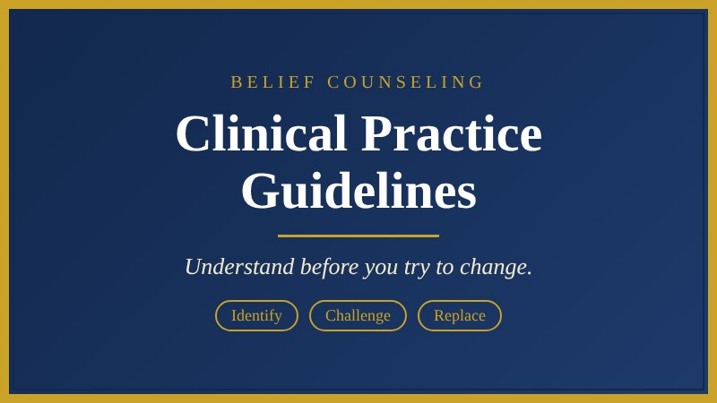

What Is Belief Counseling?
The approach in plain language: identify, challenge, and replace false beliefs with truth.

Why Beliefs Matter
Why Belief Counseling starts with beliefs, one step beneath emotions and behavior.

Mining for False Beliefs (Lies)
Looking beneath surface thoughts to uncover false beliefs, across six levels of a person’s life.

Competence and Training
Professional competencies for providing Christian cognitive-behavioral therapy.

Clinical Practice Guidelines
How to practice Belief Counseling responsibly: eleven guidelines with practical wording, Scripture, a quick check before any intervention, and notes for students.